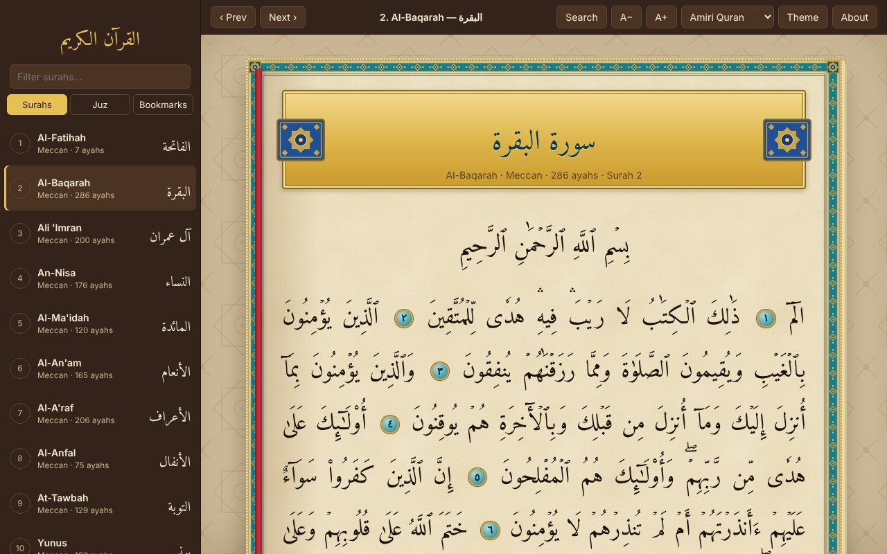
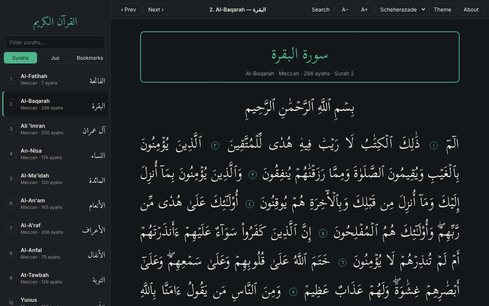
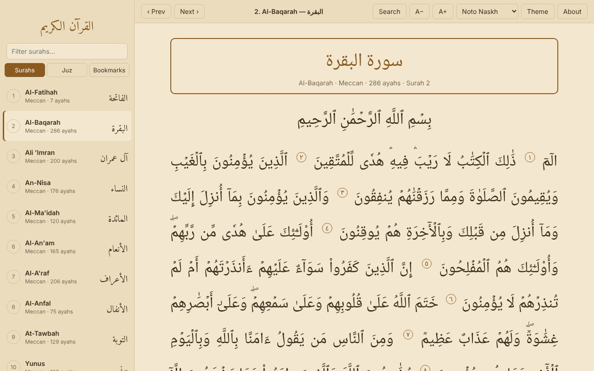
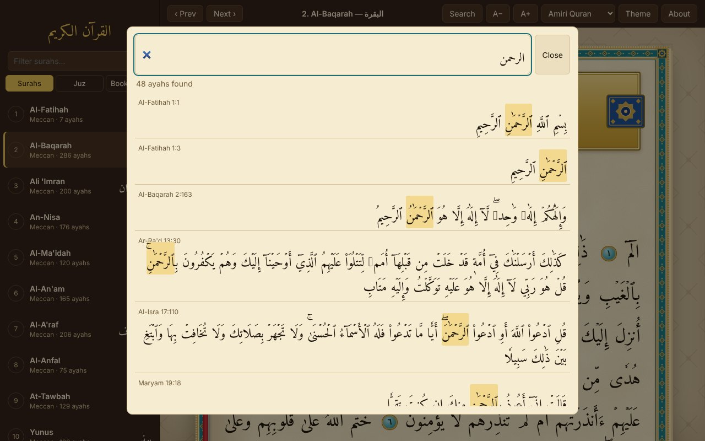

Works offline
The full Arabic text and fonts are inside the app. No account, no internet, nothing sent anywhere.
القرآن الكريم
A clean, free Quran reader for Windows and Linux. Install it once and read anywhere, with no internet needed.

Simple on purpose, so the Quran stays the focus.
The full Arabic text and fonts are inside the app. No account, no internet, nothing sent anywhere.
Type Arabic letters without diacritics and still find the ayah. Matches are highlighted and one click takes you there.
Jump by surah or by any of the 30 juz. Double-click an ayah to bookmark it, and the app remembers where you were.
Choose Amiri Quran, Scheherazade or Noto Naskh, and set the text size that is comfortable for your eyes.
The default look is a parchment page with an ornamental frame and verse medallions. Switch to light, dark or sepia any time.
No ads and no tracking. The code is on GitHub for anyone to read, check and improve.
Four themes, three fonts, one calm reading view.



Free for Windows and Linux. Latest version from GitHub Releases.
Windows 10 or later, 64-bit.
Installer (.exe) Portable version, no installThis is normal for a new free app that is not signed. Click More info, then Run anyway.
Ubuntu, Debian, Fedora, Mint and most other distros, 64-bit.
AppImage tar.gz archiveOpen a terminal in your Downloads folder and run:
chmod +x Qur-an-PC-*.AppImage ./Qur-an-PC-*.AppImage
On Ubuntu 24.04 or newer, if it will not start, add --no-sandbox to the second command.
No install. Works on phones, tablets and any computer.
Open web version View source on GitHubOnly to download it. After that it works fully offline.
Yes, completely free, with no ads and no tracking. Your bookmarks and settings stay on your own device.
From the open quran-json project, licensed CC BY-SA 4.0. Please check the text against a trusted printed mushaf before relying on it for study or teaching.
Not yet. This version is an Arabic reader. More features may come later.
There is no Mac download yet, but the web version works in any browser on a Mac.